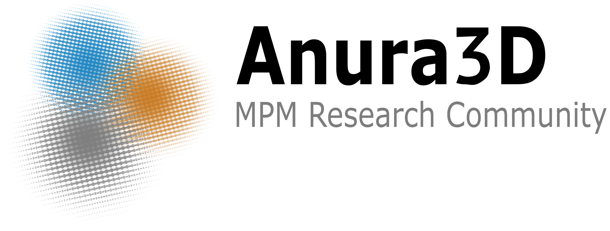
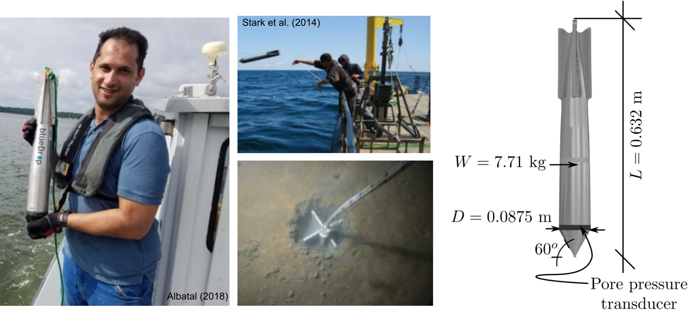
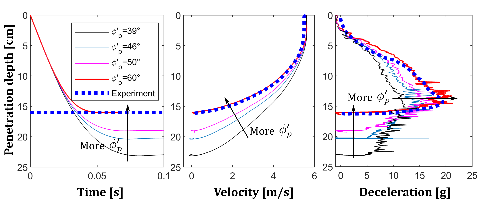
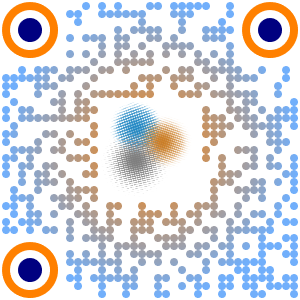

Motivation
The goal of the Anura3D MPM research community is to advance the use of MPM for solving problems with large deformation of soils and soil-water-structure interaction.
Limitations of other methods
- Can handle event triggering, but not post-failure.
- Boundary conditions are difficult to implement.
- Can not track history dependent materials.
Advantages of MPM
- Can handle large deformations.
- Boundary conditions are easy to implement.
- Can track history dependent materials.
MPM calculation cycle

Anura3D
- Open source MPM code.
- Routinely maintained by the Anura3D MPM Research Community.
- User friendly. Coding skills are not needed at the user level.
- Smooth learning curve. Tutorial manuals and YouTube Chanel available.
- Accessible community. Forum constantly reviewed.
Examples of use
Rapid in-situ testing with FFPs
Results in dry sand
$$E'=20,000 kPa$$
$$E'=1,000 kPa$$
MPM: A feasible method for FFP simulation
Installation of suction caissons
Collaboration with R.G. at University of Birmingham

Mohammad Alturki

Other examples
Onset of scour around pipe
Xuanyu Zhao (2018)
Overtopping over dike
Xuanyu Zhao (2018)
Seepage on unsaturated levee
Girardi et al. (2021)
Earthquake loading
Alsardi et al. (2021)
Future capacities
- HPC and GPU enabled
- Free field boundary conditions
- Implicit and semi-implicit solvers
- Multi-body and complex geometry contact (UMaine)
- Beam-column elements (UMaine)
- Flexible 2D elements (e.g. fabrics)
Get in touch
Download the source code at: www.anura3d.com

Subscribe to our YouTube channel: @anura3dsoftware485
14th US Workshop on the Material Point Method at UMaine!
September 14-15 (2023)